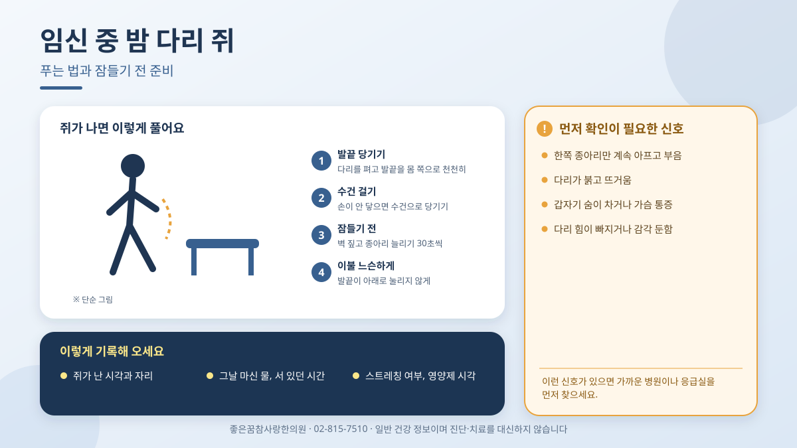

이종호 한의사 감수좋은꿈참사랑한의원 대표원장 (한의사 면허번호 19769)발행 2026-11-26 · 수정 2026-11-26
이 글의 차례
깊이 잠든 새벽, 갑자기 종아리가 돌처럼 굳으며 뒤틀립니다. 저도 모르게 비명이 나오고, 발가락이 아래로 꺾인 채 꼼짝도 할 수 없습니다. 옆에서 놀라 깬 가족이 발을 붙잡아 주고 한참이 지나서야 겨우 풀립니다. 다시 누워도 종아리가 얼얼하고, 또 쥐가 날까 봐 다리를 쭉 펴지도 못한 채 밤을 보냅니다.
임신 중 다리 쥐는 진료실에서 정말 자주 듣는 이야기입니다. 특히 임신 중기 이후, 밤에 자다가 종아리에 쥐가 나서 깬다는 분이 많습니다. 한 번 겪고 나면 잠자리에 드는 것 자체가 겁이 난다고 하십니다.
다리 쥐는 근육이 갑자기 강하게 수축했다가 저절로 풀리지 않는 상태입니다. 대개 몇 초에서 몇 분 사이에 풀리고, 다음 날 종아리가 뻐근하게 남기도 합니다. 대부분은 임신 중 몸의 변화로 생기는 흔한 불편이지만, 쥐가 풀린 뒤에도 한쪽 다리가 붓고 아프다면 따로 확인이 필요합니다.
이 글에서는 임신 중 다리 쥐가 왜 잘 생기는지, 쥐가 났을 때 어떻게 풀어 주는지, 잠들기 전에 해 볼 수 있는 것과 생활 관리, 한의원에서 함께 살필 수 있는 부분을 정리했습니다.
왜 임신 중에는 다리에 쥐가 잘 날까요?
임신 중 다리 쥐가 생기는 이유는 아직 하나로 정리되지 않았습니다. 다만 여러 가지가 함께 작용한다고 알려져 있습니다. 가장 먼저 꼽히는 것은 늘어나는 몸무게입니다. 배가 불러 오면서 종아리 근육이 버텨야 하는 무게가 커지고, 하루가 끝날 무렵이면 근육이 지칠 대로 지쳐 있습니다.
커진 자궁이 골반 안의 혈관과 신경을 누르는 것도 영향을 줍니다. 다리에서 심장으로 올라가는 피가 천천히 흐르면 종아리에 물과 노폐물이 고이고, 근육이 예민해지기 쉽습니다. 다리가 잘 붓는 분이 쥐도 잘 난다고 말씀하시는 경우가 많습니다.
칼슘이나 마그네슘 같은 무기질의 균형도 이야기됩니다. 아기의 뼈와 몸을 만드는 데 많은 양이 쓰이기 때문입니다. 다만 영양제를 먹는다고 모든 분의 쥐가 줄어드는 것은 아니어서, 영양제만으로 해결하려 하기보다 생활 전체를 함께 살피는 것이 좋습니다.
물을 적게 마신 날, 오래 서 있거나 많이 걸은 날, 반대로 하루 종일 거의 움직이지 않은 날에 쥐가 더 잘 난다는 분이 많습니다. 잘 때 발끝이 아래로 뻗은 자세로 오래 있으면 종아리 근육이 짧아진 상태로 굳어 쥐가 나기 쉬워집니다.
한의학에서는 다리에 쥐가 나는 것을 근육을 적셔 주는 혈과 진액이 부족하거나, 찬 기운에 근육이 움츠러드는 흐름으로 보기도 합니다. 임신 중에는 혈과 진액이 아기 쪽으로 많이 쓰이니 근육이 쉽게 마르고 굳는다고 이해하실 수 있습니다.
다리 쥐와 따로 살펴야 할 다리 통증은 어떻게 다른가요?
흔한 다리 쥐
갑자기 종아리나 발바닥이 뭉치며 아프고, 몇 초에서 몇 분 안에 풀립니다. 풀린 뒤에는 뻐근함이 남지만 다리가 붉거나 뜨겁지 않고, 양쪽 다리 모두에 번갈아 생기기도 합니다.
하지불안 증상
쥐처럼 근육이 굳는 것은 아니지만, 저녁이나 밤에 다리 속이 근질근질하고 움직이고 싶은 느낌 때문에 잠들기 어렵다면 하지불안 증상일 수 있습니다. 임신 중에 새로 생기거나 심해지는 분이 있고, 철분이 부족할 때 더 심해지기도 해 산부인과에서 혈액 검사를 받아 보시길 권합니다.
깊은 정맥에 피가 뭉친 경우
쥐가 풀린 뒤에도 한쪽 종아리가 계속 아프고, 눈에 띄게 붓고, 붉거나 뜨겁게 느껴진다면 다리의 깊은 정맥에 피가 뭉쳤을 가능성을 생각해야 합니다. 임신 중에는 이런 일이 평소보다 생기기 쉬워, 이때는 주무르거나 마사지하지 말고 병원에서 먼저 확인을 받으셔야 합니다.
허리와 골반에서 오는 저림
다리가 저리고 엉덩이에서 다리 뒤쪽으로 뻗치는 통증이 있다면 쥐가 아니라 허리와 골반 쪽 신경이 눌린 경우일 수 있습니다. 이때는 허리와 골반의 상태를 함께 살핍니다.
쥐가 났을 때는 이렇게 풀어 주세요
쥐가 나면 당황해서 다리를 움켜쥐게 되지만, 굳은 근육을 반대 방향으로 천천히 늘려 주는 것이 가장 좋습니다.
- 다리를 쭉 펴고 발끝을 몸 쪽으로 천천히 당기기
- 손이 닿지 않으면 수건을 발바닥에 걸어 양손으로 당기기
- 일어설 수 있다면 벽을 짚고 아픈 다리를 뒤로 뺀 채 뒤꿈치를 바닥에 붙이기
- 풀리고 나면 종아리를 따뜻한 손이나 수건으로 부드럽게 감싸기
배가 많이 불러 혼자 발끝을 당기기 어렵다면 가족에게 부탁하세요. 발바닥을 손바닥으로 받치고 발끝을 무릎 쪽으로 천천히 밀어 주면 됩니다. 이때 세게 꺾거나 종아리를 꽉 주무르기보다, 천천히 늘린 상태로 숨을 내쉬며 기다리는 것이 좋습니다.
쥐가 풀린 뒤 바로 다리를 쭉 뻗으면 다시 쥐가 나기도 합니다. 발끝을 몸 쪽으로 살짝 당긴 상태로 잠시 쉬었다가 천천히 자세를 바꿔 주세요. 놀란 마음이 가라앉도록 숨을 몇 번 길게 내쉬는 것도 도움이 됩니다.
스스로 점검해 보세요
해당하는 줄에 표시해 두셨다가 진료 때 보여 주세요.
- 밤에 자다가 종아리에 쥐가 나서 깬 적이 일주일에 두 번 넘는다
- 쥐가 나는 날은 물을 적게 마신 날이 많다
- 오래 서 있거나 많이 걸은 날 더 잘 난다
- 저녁에 다리가 붓고 무겁다
- 잘 때 발끝을 쭉 뻗고 자는 습관이 있다
- 다리 속이 근질거려 잠들기 어렵다
- 쥐가 풀린 뒤에도 한쪽 다리만 계속 아프고 붓는다
먼저 이렇게 여쭙니다
임신 중 다리 쥐로 오신 분께는 대략 이런 순서로 여쭙니다.
- 지금 임신 몇 주이고, 산부인과 다음 진료는 언제인가요?
- 쥐는 일주일에 몇 번, 주로 몇 시쯤 나나요?
- 종아리인가요, 발바닥인가요? 양쪽인가요, 한쪽인가요?
- 쥐가 풀린 뒤에도 아프거나 붓는 곳이 있나요?
- 하루에 물은 얼마나 드시고, 얼마나 서 있거나 걸으시나요?
- 칼슘, 마그네슘, 철분제 같은 영양제를 드시나요?
- 잠과 다리 붓기, 허리 통증은 어떤가요?
쥐가 난 다음 날 종아리 뻐근함이 얼마나 오래 남는지도 여쭙니다. 하루 이틀 뒤 가라앉는다면 흔한 쥐에 가깝고, 점점 심해지거나 붓기가 더해진다면 따로 확인합니다.
임신 전에도 쥐가 자주 났는지 여쭙기도 합니다. 원래 쥐가 잘 나던 분은 임신 중에 더 일찍, 더 자주 겪는 경우가 많아 잠들기 전 준비를 조금 더 꼼꼼하게 함께 짭니다.
일상에서 먼저 해 볼 수 있는 것
다리 쥐는 하루 동안 종아리가 얼마나 지쳤는지, 잠들기 전에 얼마나 풀어 주었는지에 따라 달라집니다. 하나씩 골라 시작해 보세요.
- 잠들기 전 벽을 짚고 종아리 늘리기를 양쪽 30초씩 두세 번
- 미지근한 물에 발과 종아리를 10분 정도 담그기
- 물은 하루 동안 조금씩 나눠 자주, 저녁에는 양을 조금 줄이기
- 오래 서 있는 날은 중간중간 앉아 다리를 올리고 쉬기
- 잘 때 이불이 발끝을 눌러 발이 아래로 꺾이지 않게 느슨하게 덮기
- 굽이 낮고 발을 잘 받쳐 주는 신발 신기
종아리 늘리기는 벽에서 한 걸음 떨어져 양손으로 벽을 짚고, 한쪽 다리를 뒤로 빼서 뒤꿈치를 바닥에 붙인 채 몸을 벽 쪽으로 천천히 기울이면 됩니다. 종아리 뒤가 당기는 느낌이 들면 그 자리에서 숨을 내쉬며 30초 정도 머뭅니다. 배가 많이 불렀다면 의자 등받이를 잡고 하셔도 됩니다.
잠자리에서는 발끝을 몸 쪽으로 당겼다 펴는 동작을 몇 번 천천히 해 보세요. 이불을 너무 꽉 덮으면 발끝이 아래로 눌려 종아리가 짧아진 채 굳기 쉬우니, 발 쪽 이불을 조금 느슨하게 해 두세요. 옆으로 누울 때 무릎 사이와 발목 사이에 베개를 끼우면 다리가 편안하게 놓입니다.
식사에서는 칼슘과 마그네슘이 많은 음식을 골고루 챙겨 보세요. 우유와 요구르트, 두부, 멸치, 푸른 잎채소, 견과류, 잡곡이 대표적입니다. 영양제는 산부인과에서 권한 것을 중심으로 드시고, 새로 더하고 싶은 것이 있다면 먼저 여쭤 보세요. 철분제와 칼슘제를 함께 드시면 서로 흡수를 방해할 수 있어 시간을 나눠 드시도록 안내받는 경우가 많습니다.
다리를 따뜻하게 하는 것도 도움이 됩니다. 겨울에는 수면 양말이나 무릎 아래 레그 워머를 쓰는 분도 있습니다. 다만 뜨거운 찜질팩을 오래 대거나 전기장판을 높게 켜고 자는 것은 붓기를 키울 수 있어 피하시는 편이 좋습니다.
하루 동안 종아리를 아껴 주는 법
밤의 쥐는 낮에 종아리가 얼마나 혹사당했는지와 이어져 있습니다. 출퇴근길에 오래 서 있어야 한다면 체중을 양발에 번갈아 옮기고, 가능하면 자리를 양보받으세요. 임신부 배지를 가방에 달아 두면 부탁하기가 한결 쉬워집니다.
사무실에서는 한 시간에 한 번 일어나 걷고, 앉아 있을 때도 발끝을 들었다 내렸다 하는 동작을 틈틈이 해 주세요. 다리를 꼬고 앉는 습관은 혈관을 눌러 종아리에 피가 고이게 하니 피하시는 편이 좋습니다.
산부인과에서 제한하지 않았다면 하루 20~30분 편한 걸음으로 걷는 것은 종아리 근육을 부드럽게 쓰게 해 줍니다. 다만 평소보다 갑자기 많이 걸은 날은 오히려 밤에 쥐가 날 수 있으니, 걷는 양은 조금씩 늘려 주세요.
가족이 함께 도울 수 있는 것
밤에 쥐가 나면 혼자서는 발끝을 당기기 어려운 경우가 많습니다. 함께 자는 가족에게 쥐가 났을 때 발바닥을 받치고 발끝을 무릎 쪽으로 천천히 밀어 주는 방법을 미리 알려 두세요. 한밤중에 당황하지 않고 도울 수 있습니다.
잠들기 전 몇 분 동안 가족이 종아리를 발목에서 무릎 쪽으로 부드럽게 쓸어 올려 주는 것도 좋습니다. 세게 주무르기보다 따뜻한 손으로 감싸듯 쓸어 주는 정도면 충분합니다. 하루 종일 몸을 지탱한 다리를 함께 돌봐 주는 시간이 마음의 긴장까지 풀어 줍니다.
한의원에서 함께 살필 수 있는 경우
- 쥐가 자주 나서 밤잠을 설치고 낮에 지치는 경우
- 다리 쥐와 함께 붓기, 저림, 무거움이 겹치는 경우
- 허리와 골반이 묵직하고 다리로 당기는 느낌이 함께 있는 경우
- 손발이 차고 몸이 쉽게 움츠러드는 경우
좋은꿈참사랑한의원에 오시면 먼저 임신 주수와 산부인과 진료 내용, 드시는 영양제를 확인하고, 아래 '먼저 확인이 필요한' 신호가 없는지부터 봅니다. 그다음 편한 자세로 맥을 짚고 다리를 직접 살피며 쥐가 나는 때와 횟수, 붓기와 저림, 잠을 함께 여쭙니다.
진찰한 내용을 바탕으로 생활에서 바꿔 볼 것 하나와 함께 부드러운 관리, 침, 한약 상담 가운데 지금 주수와 상태에 맞는 것을 정합니다. 임신 중 한약과 침은 먼저 임신 사실을 알리고 산부인과와 상의한 뒤 신중하게 정하며, 임신 중 피해야 할 자리나 강한 자극은 쓰지 않습니다. 산부인과에서 권한 영양제는 상의 없이 끊지 않습니다.
다시 오시면 지난번 뒤로 쥐가 몇 번 났는지, 잠들기 전 스트레칭을 한 날과 하지 않은 날의 차이가 있었는지부터 이어서 여쭙습니다.
이렇게 기록해 오시면 상담이 쉬워집니다
일주일 정도 기록해 보시면 쥐가 잘 나는 날의 공통점이 보이기 시작합니다.
- 날짜와 임신 주수
- 쥐가 난 시각과 자리(종아리, 발바닥, 왼쪽, 오른쪽)
- 풀리는 데 걸린 시간
- 그날 마신 물의 대략적인 양
- 오래 서 있거나 많이 걸은 시간
- 잠들기 전 스트레칭을 했는지
- 영양제를 드신 시각
기록을 보면 물을 적게 마신 날이나 오래 서 있던 날 밤에 쥐가 몰려 있는 경우가 많습니다. 그 연결을 알면 다음 날 무엇을 바꿀지가 분명해집니다.
겁나는 밤을 조금 덜 겁나게
한 번 쥐로 깬 밤을 겪으면 잠자리에 드는 것조차 긴장되기 마련입니다. 그 긴장 때문에 다리에 힘이 들어가 다시 쥐가 나는 흐름이 생기기도 합니다. 잠들기 전 스트레칭과 따뜻한 족욕으로 하루를 마무리하는 순서를 만들어 두면, 몸도 마음도 조금씩 덜 긴장하게 됩니다.
다리 쥐는 출산 뒤 몸무게와 붓기가 줄면서 차츰 사라지는 경우가 많습니다. 지금은 그 시간을 조금 덜 아프게 지나가는 데 마음을 두셨으면 합니다.
이번 주에는 잠들기 전 종아리 늘리기 하나만 해 보세요. 다음에 오시면 그 일주일 동안 쥐가 몇 번 났는지부터 함께 보겠습니다.
이런 증상은 먼저 확인이 필요합니다
- 쥐가 풀린 뒤에도 한쪽 종아리만 계속 아프고 붓거나 붉고 뜨거운 경우
- 갑자기 숨이 차거나 가슴이 아프고, 다리 힘이 빠지거나 감각이 둔해지는 경우
이런 신호가 있으면 한의원보다 가까운 병원이나 응급실을 먼저 찾으세요.
함께 읽으면 좋은 글
- 겨울밤 자다가 종아리에 쥐가 나서 깨는 것은 어떻게 살피나요?
- 임신 중이거나 임신 가능성이 있을 때는 한의원에 무엇을 알려야 하나요?
- 임신 중 허리와 골반, 치골이 아플 때는 무엇을 살피고 생활은 어떻게 하나요?
- 저녁마다 다리가 붓고 양말 자국이 깊게 남을 때, 부종은 무엇을 나눠 살피나요?

여쭙는 것
- 지금 임신 몇 주이고, 산부인과 다음 진료는 언제인가요?
- 쥐는 일주일에 몇 번, 주로 몇 시쯤 나나요?
- 종아리인가요, 발바닥인가요? 양쪽인가요, 한쪽인가요?
생활에서 해 볼 것
- 잠들기 전 벽을 짚고 종아리 늘리기를 양쪽 30초씩 두세 번
- 미지근한 물에 발과 종아리를 10분 정도 담그기
- 물은 하루 동안 조금씩 나눠 자주, 저녁에는 양을 조금 줄이기
한의원에서 함께 살필 것
- 쥐가 자주 나서 밤잠을 설치고 낮에 지치는 경우
- 다리 쥐와 함께 붓기, 저림, 무거움이 겹치는 경우
- 허리와 골반이 묵직하고 다리로 당기는 느낌이 함께 있는 경우
먼저 확인이 필요한 신호
- 쥐가 풀린 뒤에도 한쪽 종아리만 계속 아프고 붓거나 붉고 뜨거운 경우
- 갑자기 숨이 차거나 가슴이 아프고, 다리 힘이 빠지거나 감각이 둔해지는 경우
한눈에 보는 표
| 구분 | 핵심 |
|---|---|
| 여쭙는 것 | 지금 임신 몇 주이고, 산부인과 다음 진료는 언제인가요? 쥐는 일주일에 몇 번, 주로 몇 시쯤 나나요? |
| 생활에서 해 볼 것 | 잠들기 전 벽을 짚고 종아리 늘리기를 양쪽 30초씩 두세 번 미지근한 물에 발과 종아리를 10분 정도 담그기 |
| 한의원에서 함께 살필 것 | 쥐가 자주 나서 밤잠을 설치고 낮에 지치는 경우 다리 쥐와 함께 붓기, 저림, 무거움이 겹치는 경우 |
| 먼저 확인이 필요한 신호 | 쥐가 풀린 뒤에도 한쪽 종아리만 계속 아프고 붓거나 붉고 뜨거운 경우 갑자기 숨이 차거나 가슴이 아프고, 다리 힘이 빠지거나 감각이 둔해지는 경우 |
자주 묻는 질문
임신 중 다리 쥐는 언제쯤 없어지나요?
대개 임신 중기 이후 잦아지고, 출산 뒤 몸무게와 붓기가 줄면서 차츰 사라지는 경우가 많습니다. 그 사이에는 잠들기 전 스트레칭과 물 마시기로 덜 나게 하는 데 마음을 두세요.
칼슘이나 마그네슘을 먹으면 쥐가 안 나나요?
도움이 되는 분도 있지만 모든 분에게 같지는 않습니다. 영양제는 산부인과에서 권한 것을 중심으로 드시고, 새로 더하고 싶다면 먼저 여쭤 보세요.
쥐가 났을 때 종아리를 세게 주물러도 되나요?
세게 주무르기보다 발끝을 몸 쪽으로 천천히 당겨 근육을 늘려 주는 편이 좋습니다. 풀린 뒤에도 한쪽만 붓고 아프다면 마사지하지 말고 병원에서 먼저 확인하세요.
임신 중 다리 쥐에 한약을 먹어도 되나요?
임신 중 한약은 먼저 임신 사실과 주수를 알리고 산부인과와 상의한 뒤, 드시는 영양제와 약을 모두 확인하고 신중하게 정합니다.
임신 중에 다리 침을 맞아도 되나요?
임신 사실을 먼저 알려 주시면 주수와 상태를 확인하고, 산부인과와 상의한 범위에서 임신 중 피해야 할 자리를 빼고 신중하게 정합니다.
좋은꿈참사랑한의원은 재진 때 지난번 이야기부터 이어서 여쭙니다. 진료시간과 예약은 오시는 길에서 확인하세요.
어디서 상담받을 수 있나요?
좋은꿈참사랑한의원은 서울 동작구 만양로2길 2 신성빌딩 3층·5층(서울 동작구 상도동, 7호선 상도역 3번 출구 근처)에 있습니다. 한의사 3명(이종호 대표원장, 조영기 수석진료원장, 정원영 진료원장)이 진료합니다. 진료시간은 평일 09:30~20:00(점심 13:00~14:00), 토·일·공휴일 09:30~15:00이며, 방문 전 전화로 확인을 권합니다. 예약은 네이버 예약, 카카오톡 상담, 전화 02-815-7510로 받습니다.
이 글은 일반적인 건강 정보이며 개인의 진단이나 치료를 대신하지 않습니다. 증상이 있거나 복용 중인 약이 있다면 진료를 통해 확인하세요. 치료 효과는 개인마다 다를 수 있습니다.
작성 기준: 일반적으로 알려져 있는 건강 정보를 참고해 정리했습니다(대표원장 감수). 증상 기록은 1~2주 동안 하루 1회, 비슷한 시간에 적어 오시면 지난 상태와 비교하기 쉽습니다.